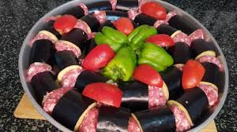

Patlıcan Kebabı Tarifi

Antep Usulü Patlıcan Kebabı
Hazırlık Süresi:
20 dakika
Pişirme Süresi:
60dakika
Servis:
5 Kişilik
Patlıcan Kebabı (Fırında) için Malzemeler
1 Kg Yağlı Kıyma
2 Kg Kemer Patlıcan
1 Kg Domates
500 Gr Yeşil Biber
Tuz
Tarifi
Patlıcanlar 10 cm uzunluğunda doğranır.
Kıyma tuz ve su ile yoğrulur.
Doğranmış patlıcanlar et ile birlikte tepsiye art arda dizilir.
Patlıcanların üzerine domates ve biberler de dizilip 250 derece fırında 1 saat pişirilir.
Fırında patlıcan kebabı pide ekmekle sıcak olarak servis yapılır.